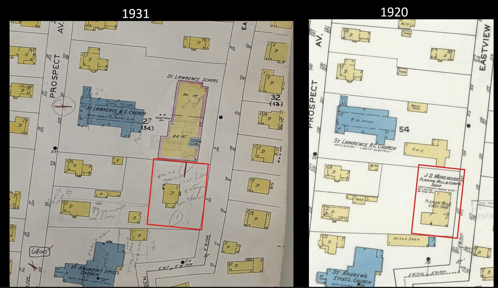
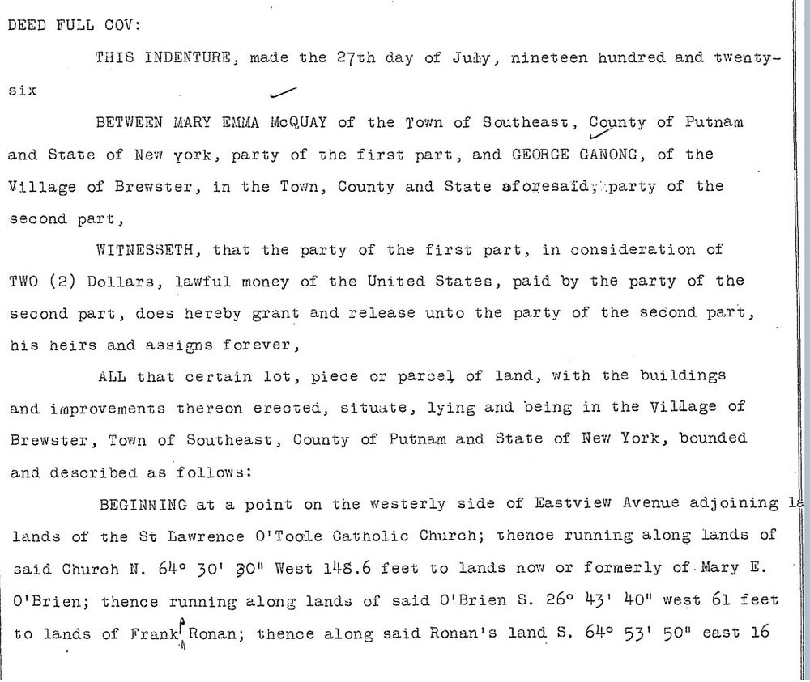
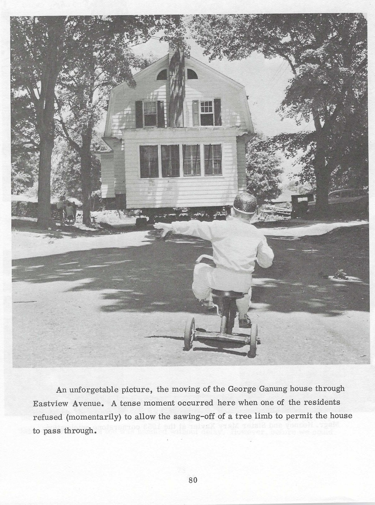
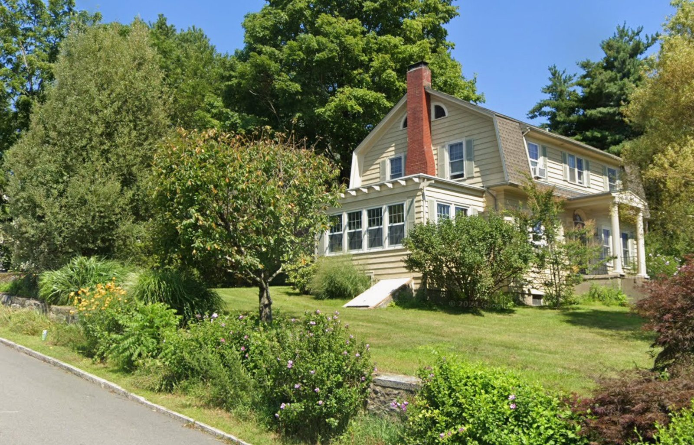
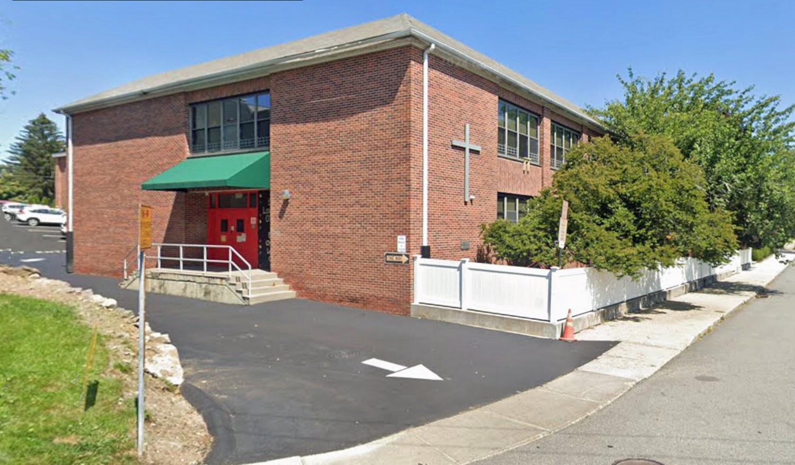

The Ganong House Move
A gambrel-roofed dwelling lifted off the old factory parcel and driven down Eastview Avenue in 1959 — the last act in the parish’s long expansion across the south end of the street.
I. At a glance
In the summer of 1959, a substantial Dutch Colonial house was jacked off its foundation at the south end of Eastview Avenue, set on rollers, and moved down the street to a new lot — an operation vivid enough that the parish’s own anniversary book later printed a photograph of it. The house was the George Ganong residence, and it had to move because the ground beneath it was wanted: the parcel was being cleared for the 1959 St. Lawrence O’Toole parochial-school addition.
What makes the move more than a curiosity is the parcel itself. The same ground had, a generation earlier, held the Morehouse sash-and-blind factory. So this one small lot at the south end of Eastview carried three chapters of the street’s history in succession — a village millshop, a fine private home, and finally the Catholic school — and the 1959 house move is the hinge between the last two.
II. One parcel, three lives — the Sanborn maps and the 1926 deed
The clearest evidence that the Ganong house stood on the former factory lot is cartographic. Two Sanborn fire-insurance maps, eleven years apart, show the same parcel at the south end of Eastview Avenue change hands between uses:

In 1920 the parcel carries the Morehouse planing mill and carpenter shop. The factory relocated to the north side of the village in 1924 (its story is told in the Morehouse piece). By the 1931 Sanborn, the same ground holds a two-story dwelling — the Ganong house. The house was, per the 1959 newspaper account, “built under the direction of A. D. Townsend” — the Eastview Avenue lumber-and-paint dealer of 14 Eastview, another recurring name in this research. George Ganong took title to the lot in 1926 (below), so the dwelling was raised under Townsend sometime between the factory’s 1924 departure and the 1931 Sanborn.
A deed now fixes that acquisition and supplies a second, independent tie to the factory. On July 27, 1926, Mary Emma McQuay of the Town of Southeast conveyed the lot to George Ganong of the Village of Brewster Liber 138/135–136. The metes-and-bounds describe a parcel on the westerly side of Eastview Avenue that begins at the land of the St. Lawrence O’Toole Catholic Church and runs its full north line — 148.6 feet — along the Church; the south line abuts St. Andrew’s Episcopal Church (fixed by “a cross on a stone near the bottom of [the] wall”), with Mary E. O’Brien and Frank Ronan to the west and about 120 feet of frontage on Eastview. That is the south-end parcel of the Sanborn maps, sitting between the two churches — now deed-described, not merely map-inferred.

The grantor’s name is the telling detail. Mary Emma McQuay shares the surname of John McQuay — the interim owner who held the sash-and-blind shop between George B. Hubbell’s estate and John D. Morehouse, selling it to Morehouse in 1914 (told in the Morehouse piece). The most economical reading is that the McQuay family held the underlying land across the factory’s working life and sold the cleared lot to Ganong once the plant had relocated — which would carry the parcel from factory to house within the deed record itself, not just across the Sanborn overlay. The relationship between John and Mary Emma McQuay, and the deed by which the lot came to her, are not yet established, so this is a strong lead rather than a closed chain. (The deed’s “buildings and improvements thereon erected” is standard granting-clause language and is not, by itself, evidence that the house already stood in 1926.)
III. The move, 1959
By the late 1950s St. Lawrence O’Toole was planning the largest expansion in its history — a ten-classroom school addition and auditorium-chapel. The Ganong lot stood in the way, and the parish had taken title to it that spring. The Brewster Standard reported the plan in June 1959:
The George Ganong residence adjoining the Parochial School on the south will be moved… to the plot of the Griffin property opposite the McDonald residence on Eastview Ave. The dwelling, one of the finest in the neighborhood, was built under the direction of A. D. Townsend. The Ganong lot is part of the Parochial school plot.
— Brewster Standard, June 4, 1959
The deed behind that line has now been reviewed, and it completes the chain the Sanborn maps could only suggest. On March 24, 1959, Julia F. Ganong — widow of George Ganong, who had died intestate on November 18, 1954 — conveyed the lot “with the buildings and improvements thereon” to the Church of St. Lawrence O’Toole Liber 513/333. Its metes-and-bounds repeat the 1926 description almost word for word — the 148.6-foot north line along the Church, the south line along St. Andrew’s Episcopal fixed by the “cross on a stone near the bottom of [the] wall,” Mary E. O’Brien and Frank Ronan to the west, about 120 feet of frontage on Eastview — so the parcel the parish took in 1959 is, in deed language, the same lot George Ganong bought in 1926 and the same ground the Morehouse factory had occupied. The deed recites its own chain back to a March 1948 conveyance (Liber 344/174) by which the lot was held by George and Julia jointly; on George’s death it passed to his widow, who carried it to the parish. The deed recites only a nominal $100 and other valuable consideration, but the federal documentary stamps tell the real story: the four stamps affixed to the record total about $24 ($10 + $10 + $2 + $2), and at the 1959 rate of $1.10 per $1,000 that points to a true purchase price of roughly $22,000. So the parish bought the lot at a substantial, arm’s-length price — not a gift, and a pointed contrast with the near-cost way the Gilroys had conveyed the church lot two generations earlier.

Rather than demolish a sound and admired house, the parish had it moved — down Eastview Avenue to the Griffin plot, opposite the McDonald residence, where it stands today. The relocation was the kind of event a small town remembers: the parish’s 100th-anniversary book preserved a photograph of the house rolling down the avenue, a child on a tricycle watching from the foreground, and recorded that a tense moment came when a resident briefly refused to allow a tree limb to be cut so the house could pass.

IV. Where it came to rest — the Griffin corner
The newspaper named the destination only as “the Griffin property opposite the McDonald residence.” The deeds now identify that ground. It is the corner where Eastview Avenue meets Wells Street (also called Cornell Avenue) — the family name already written on the street the parish’s own block had grown along — and in 1959 it belonged to William Kenneth and Helen G. Griffin. A 1966 deed by which the Griffins settled the corner into a family trust Liber 662/61 recites how they had come by it: they had bought the ground on February 1, 1956 Liber 471/156 — three full years before the Ganong house arrived on it.
That sequence explains a silence in the record. A house driven onto land its owner already holds is not a sale: nothing changes hands, no deed is drawn, and the land books register the move not at all. The Griffins owned the corner before the house came and owned it after; the relocation passes through the chain of title without leaving a single mark. So the identification of the standing house as the Ganong house does not rest on a deed — there is none to find, and now we know there cannot be — but on the 1959 move photograph, the architectural match, and the two Brewster Standard notices. Here the record’s very silence is the corroboration: it is exactly what a house-move onto already-owned land leaves behind.
The corner has a longer memory than the Griffins, and it folds the move back into the larger Eastview story. The ground was Wells land. Caroline Crosby Wells — mother of Henry H. Wells, whose own house “By Ways” stood only a few lots away — had assembled this block around the turn of the century; the parcel the Griffins bought in 1956 had been carved from that holding and held by the Stephens family from 1943 before it passed to them. The corner traces back, deed by deed, through the Wells family to the nineteenth-century Brush and Brewster farms from which the village lots were first cut.
Even the landmark the newspaper used to point the way was Wells ground. Directly across the street stood the McDonald house, built in 1922 by Frank and Mary McDonald on a lot they had bought that year from Caroline C. Wells Liber 123/444; it was taken down in the later twentieth century and the ground rebuilt with new houses. So when the parish rolled the gambrel down the avenue in 1959, it set the Ganong house on old Wells land, at the Wells Street corner, opposite a house raised on a Wells lot a generation earlier — and only a few doors from the Wells family’s own “By Ways.”
V. The same house, today
The house survives at its 1959 destination, and its identity is not in doubt: the gambrel roof, the half-round lunette window set into the gable, and the tall central chimney match the move photograph point for point. What was lifted off the old factory parcel still stands a short way down the same street.

On the parcel it left behind, the 1959 school addition rose — the auditorium-chapel facing Prospect Street, joined to the school by a covered bridge — completing the parish’s long absorption of the south end of Eastview Avenue.

The chain out to the parish. Resolved for this lot: the March 24, 1959 deed (Liber 513/333) carries the parcel from Julia F. Ganong, George’s widow, to the parish, its bounds matching the 1926 deed. Two smaller threads remain — the parish’s second 1959 acquisition (Liber 514/70) is a separate adjoining piece, still unreviewed; and the 1959 deed recites a 1948 conveyance (Liber 344/174) by which Julia already held the lot, implying a George→Julia transfer between 1926 and 1948 that has not been pulled.
The build date of the Ganong house. George Ganong’s acquisition is now fixed at July 1926 (Liber 138/135–136); the house was built under A. D. Townsend and appears on the 1931 Sanborn. Whether it already stood at the 1926 conveyance or was raised by Ganong afterward — and its exact year — is not yet settled.
The McQuay land chain. Mary Emma McQuay’s own acquisition of the lot, and her relationship to John McQuay (the 1914 interim owner of the Morehouse shop), are unpulled. The deed into her would test whether the McQuay family held the factory land continuously — the link that would carry the parcel from factory to house entirely within the deed record.
The destination lot — resolved. The “Griffin property opposite the McDonald residence” is the Griffin corner at Eastview Avenue and Wells Street (Cornell Avenue), held by William Kenneth and Helen G. Griffin from February 1956 and traced through the Stephens (1943) and Wells holdings to the nineteenth-century Brush and Brewster farms (see § IV). Because the Griffins already owned the ground, the 1959 move left no conveyance — the identification rests on the photograph, the architecture, and the newspaper, not a deed. Two sub-threads remain: a direct reading of the Griffins’ 1956 purchase (Liber 471/156, so far seen only in the 1966 deed’s recital), and the Wells–Church family relationships behind the corner.
Image rights. The 1959 move photograph, from the St. Lawrence parish 100th-anniversary book, is reproduced here by permission of the parish. The modern photograph of the house is the author’s own work, taken from the public street.
Sources Consulted
- Liber 138/135–136 — Mary Emma McQuay → George Ganong, July 27, 1926. The Eastview lot, bounded by St. Lawrence O’Toole (north) and St. Andrew’s Episcopal (south), ~120 ft of Eastview frontage; fixes Ganong’s acquisition and bridges, by the grantor’s surname, to the McQuay interest in the Morehouse piece. Witness John E. Pugsley; notary Gladys V. Ferguson.
- Liber 513/333 — Julia F. Ganong → Church of St. Lawrence O’Toole, March 24, 1959. The same Eastview lot (bounds matching the 1926 deed), “with the buildings and improvements thereon,” for $100 and other valuable consideration; recites the prior 1948 deed (Liber 344/174) and George Ganong’s intestate death, Nov. 18, 1954. Witness and notary Raymond B. Costello. Completes the factory–house–parish chain at the parish end.
- Liber 662/61 — William Kenneth & Helen G. Griffin → their family trust (W. K. Griffin and Walter Pilner, trustees), July 22, 1966. The destination corner at Eastview Avenue and Wells Street. Recites the Griffins’ February 1, 1956 acquisition (Liber 471/156) and, behind it, the Stephens (1943) and Wells/Brush chain — establishing that the Griffins owned the ground before the 1959 move, which therefore left no conveyance of its own.
- Liber 123/444 — Caroline C. Wells → Frank & Mary McDonald, August 5, 1922. The lot directly across the street — the newspaper’s landmark for the move — carved from the Wells holding; recites the Brush → Samuel M. Church chain devised to Caroline C. Wells by Church’s will (probated 1902). Corroborates the Wells ownership of the whole corner.
- Sanborn Map Company, Brewster, Putnam County, N.Y. — sheets of 1920 (showing “J. D. Morehouse Planing Mill & Carp Shop” on the south-Eastview parcel) and 1931 (showing a two-story dwelling on the same parcel, with St. Lawrence church and school to the north). The primary evidence for the factory-to-house parcel identity.
- June 4, 1959 — the Ganong house to be moved to the Griffin plot; built under A. D. Townsend; “the Ganong lot is part of the Parochial school plot.”
- November 5, 1959 — “St. Lawrence Plans School Addition”: the $500,000 program, ten classrooms for 400 children, auditorium-chapel facing Prospect Street, covered bridge to the school.
- St. Lawrence O’Toole parish 100th-anniversary book (1971), p. 80 — the 1959 house-move photograph. Reproduced by permission of the parish.
- Modern photograph of the house at its present location — the author’s own work, taken from the public street.
- St. Lawrence O’Toole (hub) · The Morehouse Factory · The Gilroy House
- A. D. Townsend, builder of the Ganong house — the lumber-and-paint dealer of 14 Eastview Avenue, cross-referenced in the Morehouse piece.
- The factory-to-house parcel identity is supported here by the 1920/1931 Sanborn comparison, the A. D. Townsend builder detail, and the 1926 McQuay–Ganong deed — whose bounds place the lot between the two churches and whose grantor links to the Morehouse chain. It reaches full deed standard once the deed into Mary Emma McQuay is pulled; the 1959 conveyance to the parish (Liber 513/333) has now been reviewed. The house’s identity across the 1959 and modern photographs rests on matching architectural features. See the project methodology.
Research by Rob G. · Eastview Avenue Series